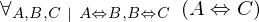
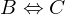
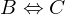
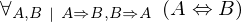
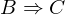
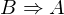
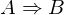
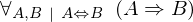
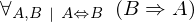

Show the Proof¶
In [1]:
import proveit
# Automation is not needed when only showing a stored proof:
proveit.defaults.automation = False # This will speed things up.
proveit.defaults.inline_pngs = False # Makes files smaller.
%show_proof
Out[1]:
| step type | requirements | statement | ||
|---|---|---|---|---|
| 0 | generalizaton | 1 | ⊢  | |
| 1 | instantiation | 2, 3, 4 |  ,  ⊢ ,  ⊢ | |
 : , : ,  : :  | ||||
| 2 | theorem | ⊢  | ||
| proveit.logic.booleans.implication.iff_intro | ||||
| 3 | deduction | 5 | , ⊢  | |
| 4 | deduction | 6 | , ⊢ | |
| 5 | modus ponens | 7, 8 | , , ⊢ | |
| 6 | modus ponens | 9, 10 | , , ⊢ | |
| 7 | instantiation | 15, 18 | ⊢  | |
| : , : | ||||
| 8 | modus ponens | 11, 12 | , ⊢ | |
| 9 | instantiation | 17, 16 | ⊢  | |
| : , : | ||||
| 10 | modus ponens | 13, 14 | , ⊢ | |
| 11 | instantiation | 15, 16 | ⊢  | |
| : , : | ||||
| 12 | assumption | ⊢ | ||
| 13 | instantiation | 17, 18 | ⊢ | |
| : , : | ||||
| 14 | assumption | ⊢ | ||
| 15 | theorem | ⊢  | ||
| proveit.logic.booleans.implication.iff_implies_right | ||||
| 16 | assumption | ⊢ | ||
| 17 | theorem | ⊢  | ||
| proveit.logic.booleans.implication.iff_implies_left | ||||
| 18 | assumption | ⊢ | ||